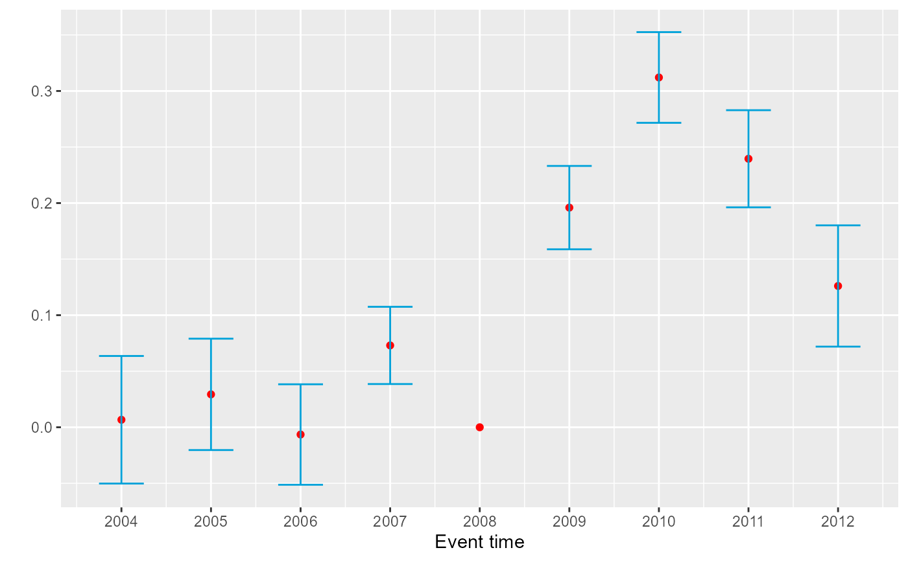

Event study plot
createEventStudyPlot.RdPlots event study coefficients with their confidence intervals. Unlike the other functions here, it takes coefficients with a reference period left out of the vector, as HonestDiD does. For fect output, use plot() in the fect package.
Usage
createEventStudyPlot(betahat, stdErrors = NULL, sigma = NULL,
numPrePeriods, numPostPeriods, alpha = 0.05, timeVec,
referencePeriod, useRelativeEventTime = FALSE)Arguments
- betahat
Vector of estimated event study coefficients.
- stdErrors
Vector of standard errors of the coefficients. Default equals
NULL. Specify eitherstdErrorsorsigma. IfstdErrorsisNULL, the function uses the square root of the diagonal ofsigma.- sigma
Covariance matrix of the coefficients. Default equals
NULL. Specify eitherstdErrorsorsigma.- numPrePeriods
Number of pre-treatment periods.
- numPostPeriods
Number of post-treatment periods.
- alpha
Desired size of the confidence intervals. Default equals 0.05.
- timeVec
Vector of the time periods of the coefficients. It leaves out the reference period, which is normalized to zero.
- referencePeriod
Scalar that gives the reference period.
- useRelativeEventTime
Logical that specifies whether to plot in relative event time, which sets the reference period to zero. Default equals
FALSE.
References
Rambachan, Ashesh, and Jonathan Roth (2023). A More Credible Approach to Parallel Trends. Review of Economic Studies 90 (5): 2555-2591. doi:10.1093/restud/rdad018
Examples
# \donttest{
createEventStudyPlot(betahat = BCdata_EventStudy$betahat,
sigma = BCdata_EventStudy$sigma,
numPrePeriods = length(BCdata_EventStudy$prePeriodIndices),
numPostPeriods = length(BCdata_EventStudy$postPeriodIndices),
alpha = 0.05,
timeVec = BCdata_EventStudy$timeVec,
referencePeriod = BCdata_EventStudy$referencePeriod)

# }